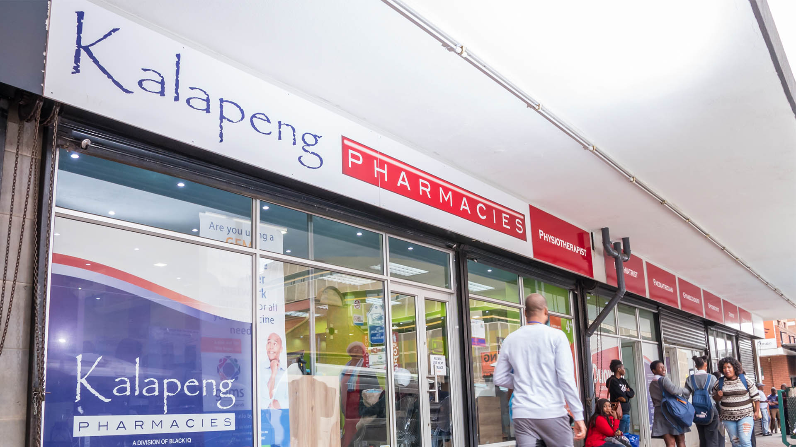
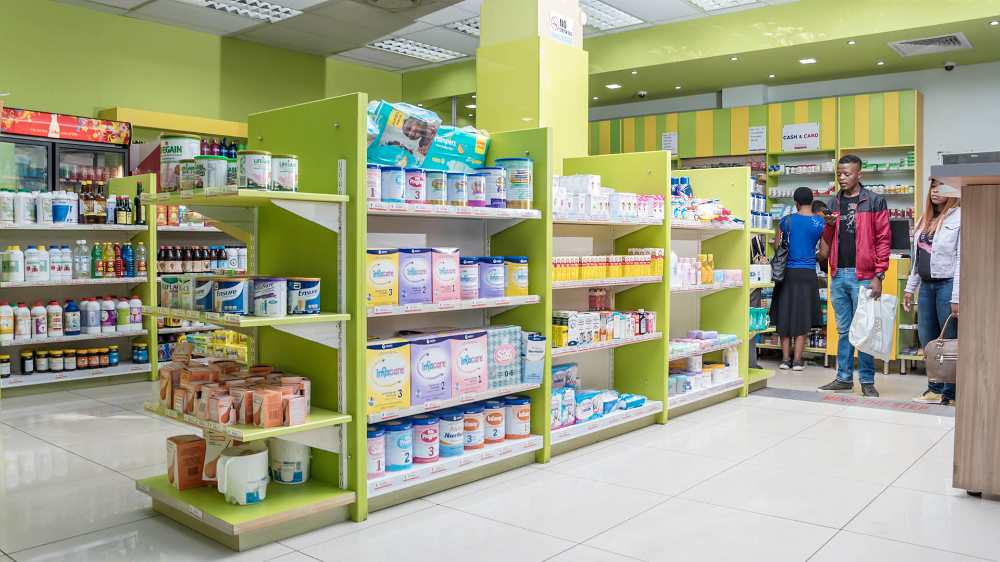

KALAPENG PHARMACIES.
Kalapeng Pharmacies is the largest (in number) 100% black-owned chain of pharmacies in South Africa. The group has 16 pharmacies situated in Gauteng, Mpumalanga, North West and Limpopo. Kalapeng’s pharmacies offer a wide range of prescription items, Over-The-Counter medication and various product lines in our front shops. One of Kalapeng’s most popular product categories is the extensive range of quality herbal remedies.
WHERE TO FIND US
At the Lower First Level,Next to Entrance 13.
 